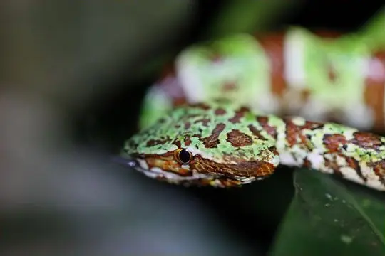
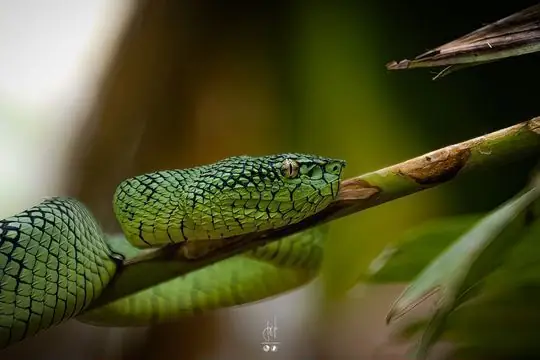
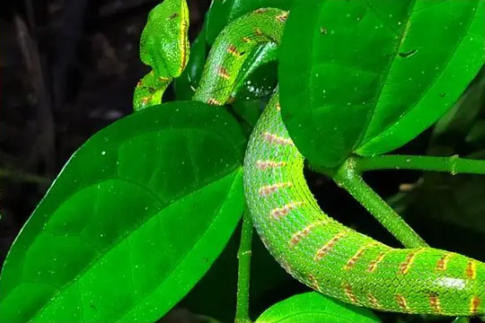

Tropidolaemus
The genus Tropidolaemus (family Viperidae) has 5 living species in SnakeList (all venomous), recorded in 6 countries.
- 5living species
- 5venomous
- 6countries
About the genus
A genus of the family Viperidae (vipers and pit vipers).
Species
Showing 5 species

Broad-banded Temple PitviperTropidolaemus laticinctus- No photo yetHutton's PitviperTropidolaemus huttoni
 North Philippine Temple PitviperTropidolaemus subannulatus
North Philippine Temple PitviperTropidolaemus subannulatus
South Philippine Temple PitviperTropidolaemus philippensis
Wagler's Pit ViperTropidolaemus wagleri
No snakes in Tropidolaemus match.
About the genus Tropidolaemus
Compare its species
Its living species side by side. Lengths come only from SnakeList’s reviewed, sourced accounts; the others are left blank rather than guessed.
| Species | Venom | Recorded in | Adult length (reviewed accounts) |
|---|---|---|---|
| Broad-banded Temple Pitviper Tropidolaemus laticinctus | Venomous | 1 country (Asia) | No reviewed account yet |
| Hutton's Pitviper Tropidolaemus huttoni | Venomous | 1 country (Asia) | No reviewed account yet |
| North Philippine Temple Pitviper Tropidolaemus subannulatus | Venomous | 2 countries (Asia) | No reviewed account yet |
| South Philippine Temple Pitviper Tropidolaemus philippensis | Venomous | 1 country (Asia) | No reviewed account yet |
| Wagler's Pit Viper Tropidolaemus wagleri | Venomous | 1 country (Asia) | No reviewed account yet |